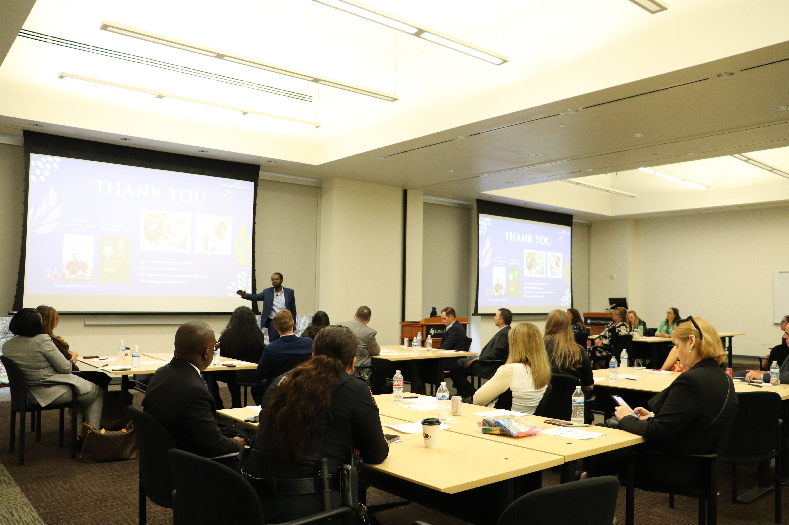
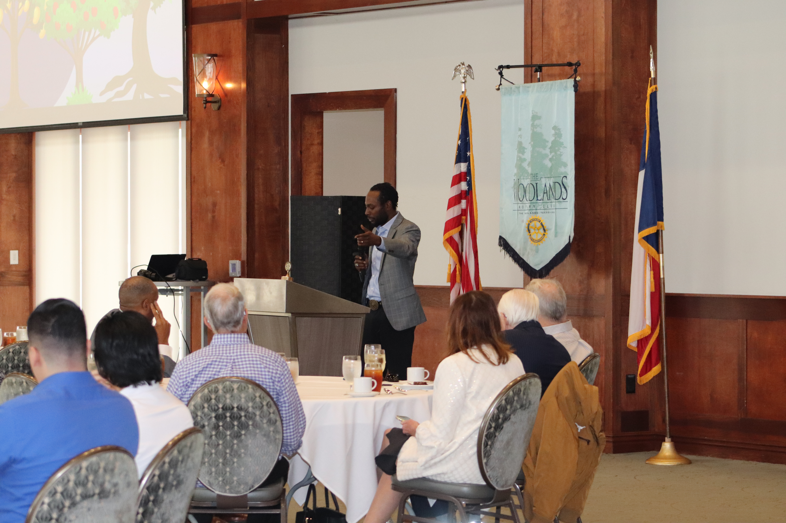
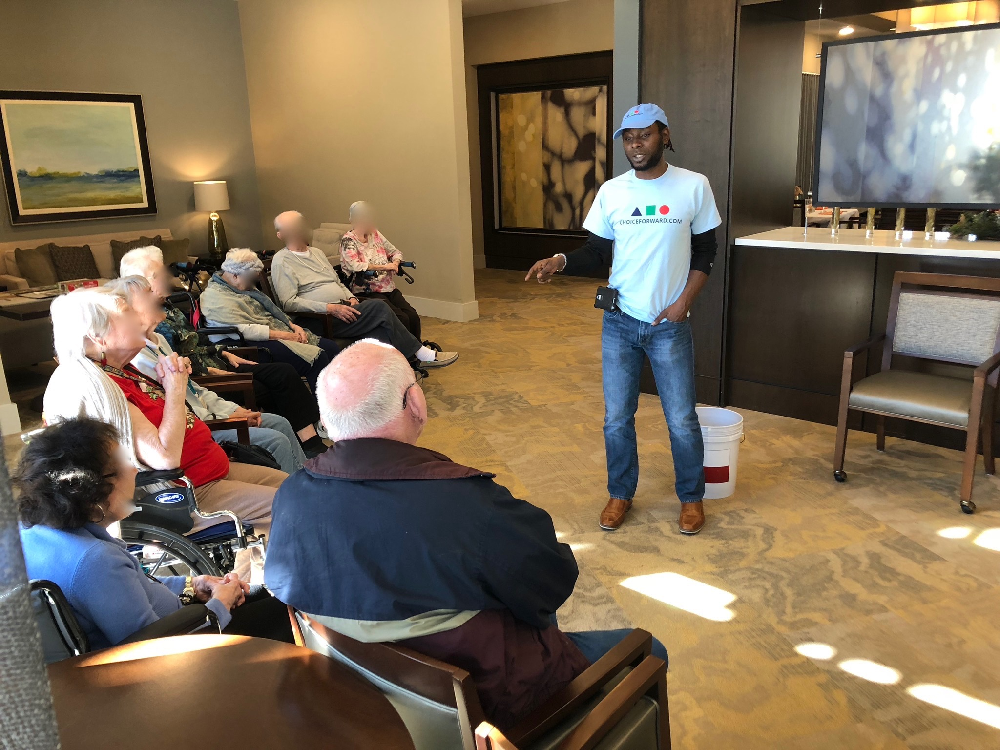
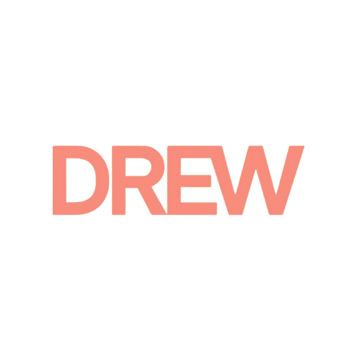
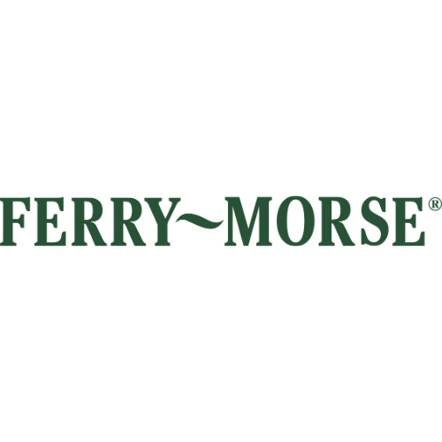
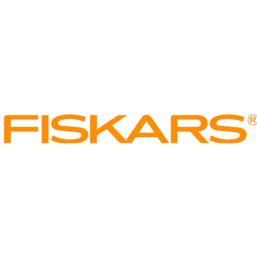
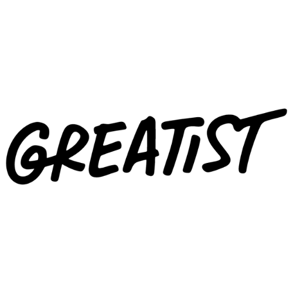
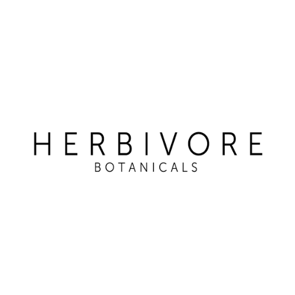
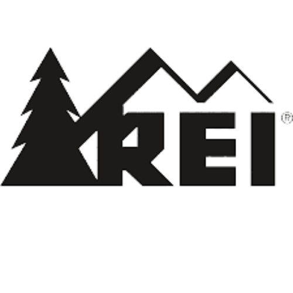

Keynotes & Presentations
A main-stage talk that energizes and inspires the audience. Personal, funny, and built to stick long after the event ends.
- Conferences and annual meetings
- Company all-hands and kickoffs
- Commencements and galas
Keynotes & Presentations · Workshops · Plant Experiences
Marcus Bridgewater, known to millions as Garden Marcus, uses the lessons of nature to share wisdom for life. With kindness, patience, and positivity, he speaks, teaches, and inspires organizations, large and intimate audiences, to get both their hands in their real and methaphorical soil and address their growth.









Ways to book
Every engagement is built around your audience and your goal. Start with the format, and we'll shape the rest together.
A main-stage talk that energizes and inspires the audience. Personal, funny, and built to stick long after the event ends.
Interactive sessions built on the Choice Forward framework: practical tools for peace, balance, harmony, and connection at work.
Marcus leads your group through a hands-on plant experience. Everyone leaves with something living, and a lesson that grows with it.
Signature topics
Each can be delivered as a keynote, a workshop, or paired with a plant experience.
Marcus's signature talk, where he shares the many valuable lessons he's gained from life
Best for: conferences, kickoffs, education audiences
The everyday chain of choices that shapes how we treat ourselves and each other, and how to strengthen it under pressure.
Best for: teams, wellbeing programs
Being the calm, proactive presence in a hard exchange instead of being run by it. Includes boundaries that actually hold, with techniques for building community and communication.
Best for: managers, leaders, customer-facing teams
A whole-person look at mental, physical, spiritual, and community health, drawn from the Choice Forward framework.
Best for: wellness weeks, retreats, associations
You may know him as
Millions follow Marcus for gardening, nature, and permaculture, and for the way he connects what happens in the soil to what happens in us. Choice Forward is the company behind his speaking and teaching work.
2.3M+ followers across platforms
Author of See Marcus Grow (Penguin), selected as Jumpstart's Read for the Record title. Creator of the children's show Discover Grow Bloom.
Who books Marcus
All-hands, offsites, ERG events, and wellbeing programs.
Opening and closing keynotes, breakouts, and fireside chats.
Author visits, family nights, and plant programs for kids.
Member luncheons, leadership series, and community events.
How it works
Tell us your date, audience, and goal.
A short call to confirm fit and format.
Scope, logistics, and investment in writing.
Marcus prepares with your team and delivers.
What organizers say
"Marcus Bridgewater's stage presence is powerful. His storytelling style and audience engagement methodologies are a bright light in today's world, offering tangible insights and experiences that stay with us long after he leaves the stage. Marcus engages directly with participating audiences in a way that feel authentic, relatable and empathetic — while keeping the conversation flowing in a focused and strategic storytelling style. Whatever ideas different audiences present to Marcus, he masterfully integrates the collective experiences of the room into a relatable context that everyone can understand."
Andrew Okfee, Owner Amotion"Coordinating with Dana to organize the event was an easy process from timing to logistics. Once the event was underway, Marcus commanded the show! He radiated a bright calmness and provided so much insight throughout the session. This was our 2nd time having Marcus back and the group really enjoyed his presence."
Dom Wilkins, Network Support Manager, Cisco Meraki"Marcus radiated such positive energy that uplifted and inspired all. His message of kindness, patience, and positivity is one that I hope we all will incorporate into everything we do."
Renee Diaz, Engagement & Events Specialist, Capital Insurance Group“What a wonderful weekend with Marcus, Dana, and fellow workshop participants… Marcus's personal story and philosophy of personal growth for the strengthening of our community resonate deeply for our times."
Azura Hassan, Workshop Participant 2023, “Nurture Your Garden, Nurture Yourself” Workshop“Marcus made an appearance at our inaugural all-company meeting. His words were powerful, moving and genuine. He further bonded our team and was a true source of inspiration for all of us."
Geoff Bremner, Chief Growth Officer, Bend Health"Marcus led our employees through an inspiring, engaging, and uplifting hour of connecting gardening & nature back to positive personal wellness. His thoughts on vice, mindfulness and the power of getting your hands in dirt were particularly insightful. The attendees loved the event and I highly recommend booking him."
Stephanie Fields, Employee Experience Manager at Cisco Meraki"As the keynote and kick off to our virtual garden festival, Great Grow Along, Marcus was able to get the audience pumped about plants, inspire them to stick around for the 10-day event and entertain them. He has such a great presence in front of the camera, it feels like you are sitting there listening to a friend. I’d see him speak anywhere, anytime."
Katie Debow, President of Garden Media Group"The Houston Methodist Creative Arts Therapies medical team had the pleasure of hosting Garden Marcus for our annual team retreat, and it was an unforgettable experience. As medical professionals we navigate an environment of uncertainty and high stress while bringing our best for our patients each day. Garden Marcus led us in a session that brought our team together in such a unique and meaningful way. By cultivating our own plants, we acquired essential gardening skills, and through this process we were reminded that we cannot force anything to grow, but by mindfully cultivating our roots, we can build resilience within ourselves. Marcus's genuine passion for gardening and life shone through, making the session not only educational, but inspiring. His ability to connect with each participant, even within a short amount of time, was truly remarkable. We left the retreat feeling rejuvenated and more connected, with a deeper appreciation for the physical act of planting and its metaphorical significance of the perseverance needed for growth within our everyday lives. Thank you, Garden Marcus, for enriching this unforgettable day!"
Maegan Morrow – Creative Arts Therapist with the Center for Performing Arts Medicine at Houston Methodist"I had the privilege of hearing Marcus Bridgewater speak at The Woodlands Chamber of Commerce Annual Volunteer Appreciation Luncheon and I left with a commitment to live more intentionally. Marcus shared his unique perspective on growing community using the plant kingdom as a metaphor for living in community as human beings. It is a fresh and welcome new lens by which to see how interdependent we are on one another and how every human being is programmed to thrive in community. Not only does he present with quiet confidence, he leaves his audience inspired to learn and do more to make positive contributions to their community and their world. 5 Gold Stars!"
Ann Wolford, former chair of The Woodlands Chamber of CommerceSwipe or scroll horizontally to read more testimonials.
Contact & speaking
General message? Use the Contact page. Booking request? Use the full Speaking intake form so we can reply with accurate availability and fit.
Prefer email? info@choiceforward.com
Need to reach Marcus for media, partnerships, cohorts, assessments, or general inquiries?